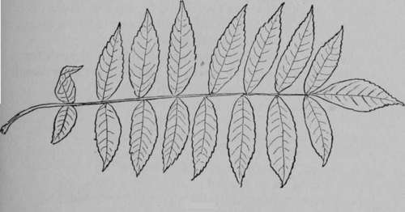

XII. Health And Woodland Medicine. Continued
Description
This section is from the book "The Book Of Woodcraft", by Ernest Thompson Seton. Also available from Amazon: The Book of Woodcraft.
XII. Health And Woodland Medicine. Continued
Cold Or Fever Cure
A decoction of the poplar bark or roots of flowering dogwood is a good substitute for quinine, as tonic and cold cure, bowel cure, and fever driver.
Cough Remedy
(That is, to soften and soothe a cough:) Slippery elm inner bark boiled, a pound to the gallon, boiled down to a pint, and given a teaspoonful every hour.
Linseed is used the same way, and is all the better if licorice or sugar of any kind be added.
Spice bush.
Golden willow.

Flowering dogwood.
Black cherry.
Cherry leaf - teeth enlarged.
Another woodland remedy is the syrup made by boiling down the sap of the sweet birch tree.
Cough And Irritated Throat
Mix a spoonful of sugar with two of butter, and eat it slowly. This usually stops a hacking cough that would keep the patient from sleep.
Cough And Lung Remedy
A pound of inner bark of black cherry, soaked twenty-four hours in a gallon of water and boiled down to one pint, makes a famous cough remedy and lung balm. A tablespoonful three or four times a day.
Diuretic
A decoction of the inner bark of elder is a powerful diuretic.
Face-Ache
Heat some sand in the frying-pan, pour it into a light bag and hold it against the place. The sand should be as hot as can be borne. This treatment is good for most aches and pains.
Inflammation of the eyes or skin: Relieved by washing with strong tea of the bark of witch hazel.
Ink
The berries and leaves of red or staghorn sumac boiled together in water make a permanent black ink.
Lung Balm
Infusion of black cherry bark, root preferred, is a powerful tonic for lungs and bowels. Good also as a skin wash for sores. When half wilted, the leaves are poisonous to cattle.
Nose-Bleed
A snuff made of the dried leaves of witch hazel stops nose-bleed at once, or any bleeding.
Nose Stopped Up At Night
Wet the nose outside, as well as in, with cold water, and prop the head up higher with pillows.
Pimples And Skin Rash
A valuable tonic or skin wash for such troubles is strong tea made of the twigs of alder.
Poison Ivy Sting, To Cure
Wash every hour or two with soapy water as hot as can be borne, then with hot salt water. This relieves the sting, and is the best simple remedy. The sure cure is washing the parts two or three times in alcohol in which is dissolved sugar-of-lead, 20 to 1. This will cure the sores in three days unless the trouble is complicated with rheumatism, in which case you need a doctor. The same remarks apply to poison oak and poison sumac.
Purge, Mild
A decoction of the inner bark of butternut, preferably of root, is a safe, mild purge. Boil a pound in a gallon of water till a quart only is left. A teaspoonful of it is a dose.
Purge, Strong
The young leaflets of elder are a drastic purgative. They may be ground up and taken as decoction, boiling a pound in a gallon of water till it makes a quart. Use in very small doses - one teaspoonful.
Purge, Fierce
The root, fresh or not long dry, of blueflag, should be powdered and given in twenty-grain doses. A grain is about the weight of a grain of wheat, or one twenty-fourth of an ounce; so twenty grains is what will cover a quarter-dollar to the depth of one sixteenth inch. Rheumatism: Put the patient in bed. Make him drink.
The Indian treatment was a Turkish bath, as described later.
Sores And Wounds
Can be cleansed by washing with hot brine, that is a handful of salt in a quart of water.
Sunburn
If you take your sunburn gradually, a little each day, it doesn't hurt. But if you are foolhardy at first, and expose your white skin, arms, or neck and back to the blaze of the summer sun for a few hours you will pay a heavy price. At night you will be in a torment of fever-fire. The punishment may last for days. Huge blisters will arise, and you may be obliged for a time to give up all plenty of hot water, or better a thin extract of sassafras, or tea made of wintergreen leaves. Keep very warm, so as to get a good sweat. Rub him all over, especially the place afflicted, with grease or vaseline. The only use of these last things is to protect the skin. It is the rubbing that does the good active sports. As soon as you find you are overburnt, put cold cream, vaseline, sweet-oil, or grease of any kind on the place, and keep it covered up. In a day or two you will be well.
But it is best to go slow. Do not get overdone at all, and so have no damage to repair.
Maie-fern.
Sweater
A famous woodman's sweater is tea made from the leaves and twigs of hemlock. Make a gallon of about two pounds of twigs, etc., and sip it all day.
Tapeworm
Boil a pound of smashed-up male-fern or evergreen fern root in a gallon of water till but a pint of fluid is left. A teaspoonful three or four times a day - followed by a purge - is a famous remedy.
Tonic
An infusion or tea of black alder bark is a wonderful tonic, and a healer of the skin, inside and out. Boil a pound of bark in a gallon of water till a quart is left. Take half a cupful four times a day. This is a bracer for the feeble constitution.
Tonic
A fine tonic is made from the twigs of sweet birch, by boiling two pounds of twigs in a gallon of water, till it makes about a pint of strong brown tea, which should be sipped, about half a pint a day.
Sumac.
Tonic
A decoction, or boiled in water extract, of almost any part of the red sumac tree, is a powerful tonic. Make it of two pounds of sumac in a gallon of water boiled to a pint. Take a big spoonful twice a day.
Wash For Sore Throat
Inner bark of hemlock is a powerful astringent and good as a throat wash. A pound of bark in a gallon of water is boiled to a quart.
Worms
The berries of black alder used as tincture (bruised in alcohol) are a powerful remedy for worms. A dessertspoonful three times a day is a dose.
Worms And Tonic
The inner bark and root bark of tulip tree, either as dry powder or infusion, are powerful tonics and especially good for worms.
Wound-Wash
See Antiseptic.
For other remedies, see Dr. Elisha Smith's "Botanic Physician," Cincinnati, 1844.
Continue to:
Tags
bookdome.com, books, online, free, old, antique, new, read, browse, download